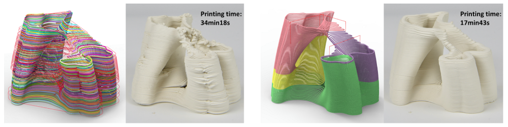
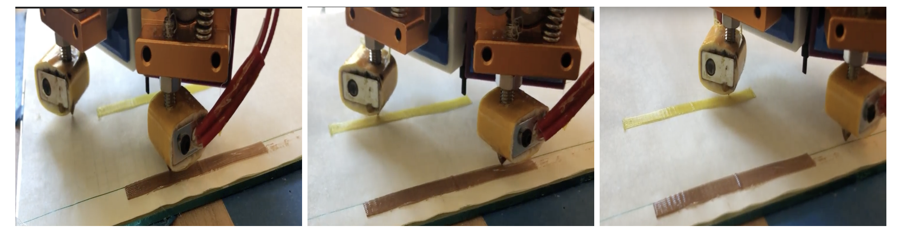
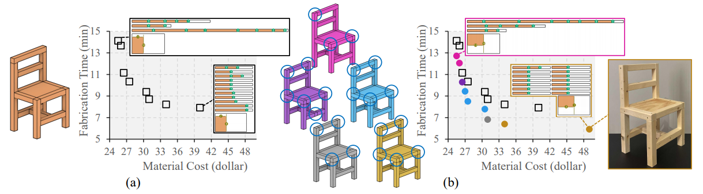

Haisen ZhaoPostdoctoral Research Associate
Institute of Science and Technology Austria (IST Austria) Computer Graphics and Digital Fabrication Group Office: TI21-02-108 Email: haisenzhao AT gmail.com |
 |
Bio
Haisen Zhao is a postdoctoral research associate (CV) at the Institute of Science and Technology Austria (IST Austria). He is a member of the Computer Graphics and Digital Fabrication Group, working with Prof. Bernd Bickel. His research interest lies at the geometric processing and its application for digital fabrication, including additive manufacturing and subtractive manufacturing. He completed his Ph.D. from Shandong University (2018) under the supervision of Baoquan Chen and received Master's and Bachelor's degree in School of Computer Science and Technology and School of Software at Shandong University in 2014 and 2011, respectively. Haisen Zhao was a postdoctor at the University of Washington, as a member of the Computer Graphics Group (GRAIL), working with Prof. Adriana Schulz.
Publications
|
 |
As-Continuous-As-Possible Extrusion Fabrication of Surface Models
[Arxiv]
Fanchao Zhong,
Yonglai Xu,
Haisen Zhao,
Lin Lu Provisionally accepted to ACM Transactions on Graphics (TOG) |
|
 |
Molly Carton,
Chandrakana Nandi,
Adam Anderson,
Haisen Zhao,
Eva Darulova,
Dan Grossman,
Jeffrey Lipton,
Adriana Schulz,
Zachary Tatlock
SFF Symp 2021 |
|
 |
Co-Optimization of Design and Fabrication Plans for Carpentry
[2107.12265]
Haisen Zhao,
Max Willsey,
Amy Zhu,
Chandrakana Nandi,
Zachary Tatlock,
Justin Solomon,
Adriana Schulz
Accepted to ACM Transactions on Graphics (TOG) |
 |
Haisen Zhao,
Yash Talwekar,
Wenging Lan,
Chetan Sharma,
Daniela Rus,
Adriana Schulz,
Jeffrey Lipton
IEEE IROS 2021 |
 |
James Noeckel,
Haisen Zhao,
Brian Curless,
Adriana Schulz
Computer Graphics Forum (SGP 2021) |
 |
Yu Xing,
Yu Zhou,
Xin Yan,
Haisen Zhao,
Wenqiang Liu,
Jingbo Jiang,
Lin Lu
Computers & Graphics (CAD & Graphics 2021) |
 |
Ben Jones,
Yuxuan Mei,
Haisen Zhao,
Taylor Gotfrid,
Jennifer Mankoff,
Adriana Schulz
ACM Transactions on Graphics Present on ACM SIGGRAPH 2022 |
 |
Ali Mahdavi-Amiri,
Fenggen Yu,
Haisen Zhao*,
Adriana Schulz,
Hao Zhang
*corresponding author
ACM Transactions on Graphics (ACM SIGGRAPH Asia 2020) |
 |
Chenming Wu,
Haisen Zhao,
Chandrakana Nandi,
Jeffrey Lipton,
Zachary Tatlock,
Adriana Schulz
ACM Transactions on Graphics (ACM SIGGRAPH Asia 2019) |
 |
Geometric Research and Application on Additive and Subtractive manufacturing
[Paper]
CCF Outstanding Doctoral Dissertation Award 2019
PhD Thesis (in Chinese), 2018, Shandong University |
 |
|
 |
Haisen Zhao,
Hao Zhang,
Shiqing Xin,
Yuanmin Deng,
Changhe Tu,
Wenping Wang,
Daniel Cohen-Or,
Baoquan Chen
ACM Transactions on Graphics (ACM SIGGRAPH 2018) |
 |
Haisen Zhao,
Fanglin Gu,
Qixing Huang,
J. A. Garcia Galicia,
Yong Chen,
Changhe Tu,
Bedrich Benes,
Hao Zhang,
Daniel Cohen-Or,
Baoquan Chen
ACM Transactions on Graphics (ACM SIGGRAPH 2016) |
 |
Haisen Zhao,
Lin Lu,
Yuan Wei,
Dani Lischinski,
Andrei Sharf,
Daniel Cohen-Or,
Baoquan Chen
ACM Transactions on Graphics Present on ACM SIGGRAPH 2016 |
 |
Variational Circular Treemaps for Hierarchical Data
[Paper]
Haisen Zhao,
Lin Lu,
Zhitao Bo
Journal of Software (PacificVis 2015) (in Chinese) |
 |
Lin Lu,
Andrei Sharf,
Haisen Zhao,
Yuan Wei,
Qingnan Fan,
Xuelin Chen,
Yann Savoye,
Changhe Tu,
Daniel Cohen-Or,
Baoquan Chen
ACM Transactions on Graphics (ACM SIGGRAPH 2014) |
 |
An algorithm for visibility computation of points based on Voronoi diagrams
[Paper]
Haisen Zhao,
Chenglei Yang,
Lin Lu,
Xiaoting Wang,
Yijun Yang,
Xiangxu Meng
Computer-Aided Design & Computer Graphics (CAD/CG 2012), Best Student Paper. (in Chinese) |
Experience
| 2021.09—now | Postdoctoral researcher, working with Prof. Bernd Bickel, IST Austria |
| 2019.3—2021.8 | Postdoctoral researcher, working with Prof. Adriana Schulz, University of Washington |
| 2019.1—2019.2 | Research Intern, working with Prof. Baoquan Chen, Peking University |
| 2014.9—2018.12 | PhD candidate, advisor: Prof. Baoquan Chen, Shandong University |
| 2011.9—2014.7 | Master candidate, Research Center of HCI&VR, Shandong University |
| 2007.9—2011.7 | Bachelor candidate, Digital Media Technology, Shandong University |
Honors and Awards
| 2020 | First prize of Shandong Natural Science Award, Shandong Province |
| 2019 | Doctoral Dissertation Award, CCF |
| 2018 | Innovation Capacity Improvement Scholarship, Shandong University |
| 2017 | Excellent Graduate Student Scholarship, Shandong University |
| 2016 | President Scholarship, Shandong University |
| 2016 | National Scholarship, Chinese Education Department |